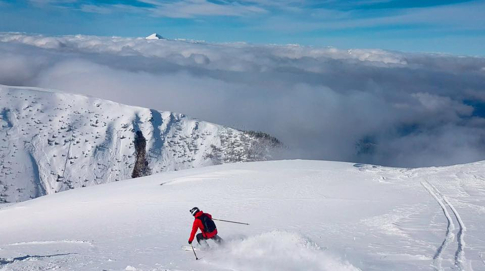
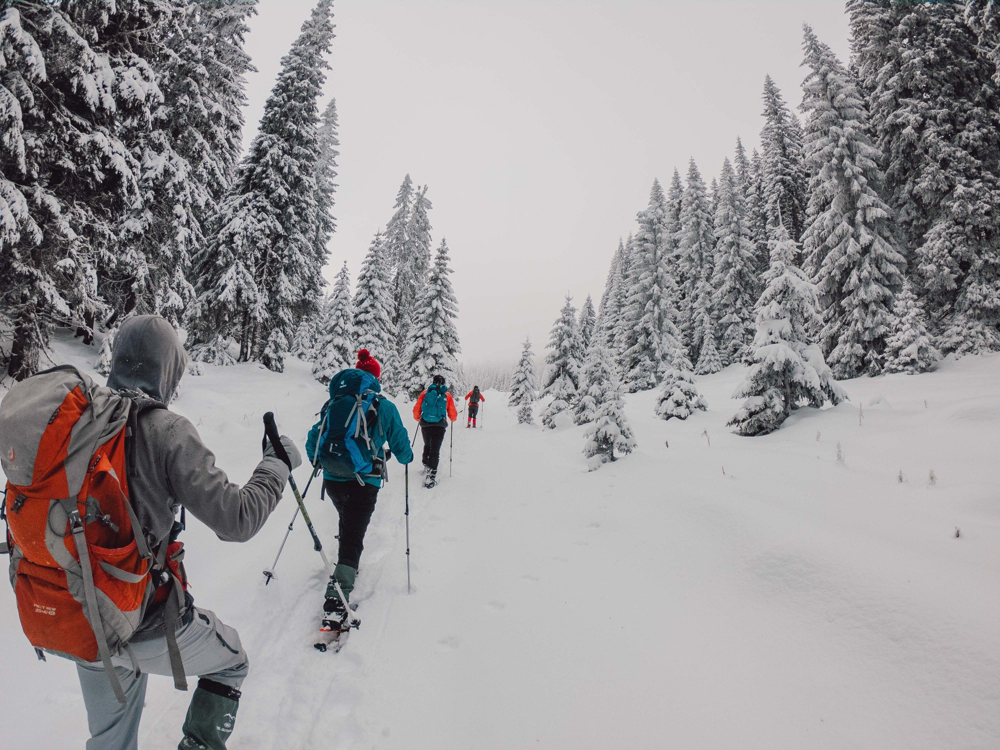
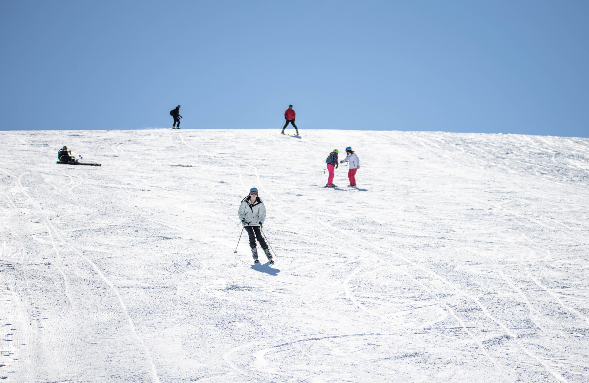
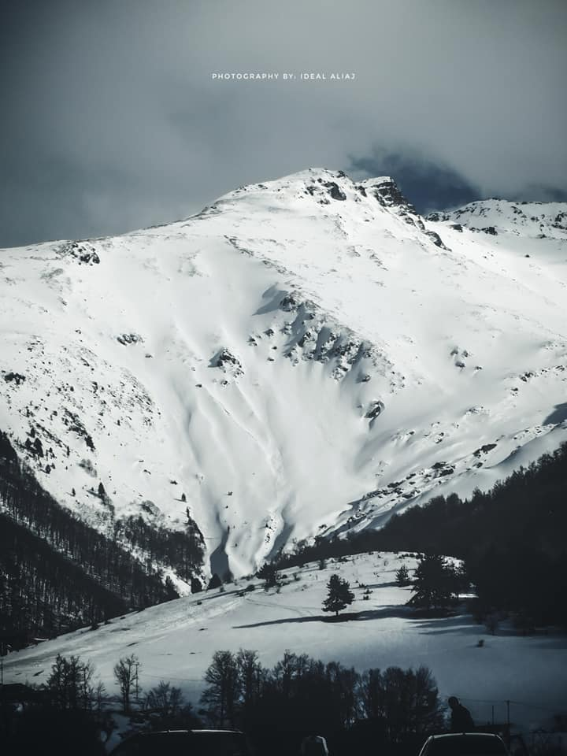

{kind=link}
{kind=link}
There’s nothing quite like exploring and taking some photos of hiking the Kosovo mountains in winter. Although of the fact that it may be somewhat cold, you will love it, and you’ll get the opportunity to finish the day with a hot chocolate by the fire. Sounds like a really sweet approach to spend a winter weekend
| Stunning views of the Mountains |
|||
|---|---|---|---|
|  |
BrezovicaBrezovica is one of the most visited winter tourist destinations in Kosovo. The ski resort area is ideally situated on the north and northwest-facing slopes of the Sharr Mountains National Park. Read more |
 |
GjeravicaGjeravica, 2656 m/alt is officially the highest peak in Kosovo (unofficially is Rudoka 2658 m/alt). It is the second-highest peak in the Accursed Mountains after Maja Jezerce 2694 m/alt. The view of the Accursed Mountains from the top of Gjeravica is extremely impressive! Read more |
 |
RugovaRugova's mystical mountains are perfect for hiking, skiing, and camping. In the meantime, you will be lucky enough to enjoy stars and milkyway at night Read more |
 |
BogeBogë is a small mountainous village and also a holiday resort village in western Kosovo. Bogë is located in the Bjeshket e Nemuna. The village is nestled in by surrounding mountains many of which are picturesque. Bogë is rapidly becoming a popular holiday resort in Kosovo; many holiday chalets have been built, and the presence of the ski resort attracts many visitors Read more |
|  |
Arxhena Mountain ResortThe ski resort Arxhena Mountain Resort in Brod is located in Kosovo. 4 lifts transport the guests. The winter sports area is situated between the elevations of 1,510 and 2,050 m. Read more |
 |
PrevallaPrevalla is a ski resort and touristic village which approximately is 30 km away from Prizren, Kosovo and about twelve kilometers from Brezovica, the largest ski center in Kosovo. Prevalla is a popular destination for hikers or skiers. The village borders a large forest. During the summer, people go there to relax and rest, whereas during the winter people visit it for its seasonal recreational sports. Read more |
{kind=link}
{kind=link}
{kind=link}
{kind=link}
| Lorem, ipsum. | Categories |
|---|---|
 |
Kategoria1 Kategoria1 Kategoria1 Kategoria1 Kategoria1 Kategoria1 Kategoria1 Kategoria1 Kategoria1 |
Link headerKategoria1Kategoria1 Kategoria1 Kategoria1 Kategoria1 Kategoria1 Kategoria1 Kategoria1 Kategoria1 |
|
Link headerKategoria1Kategoria1 Kategoria1 Kategoria1 Kategoria1 Kategoria1 |